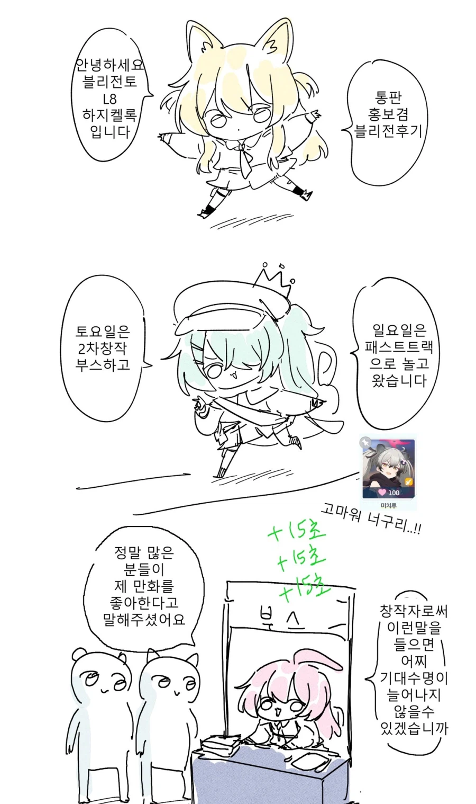
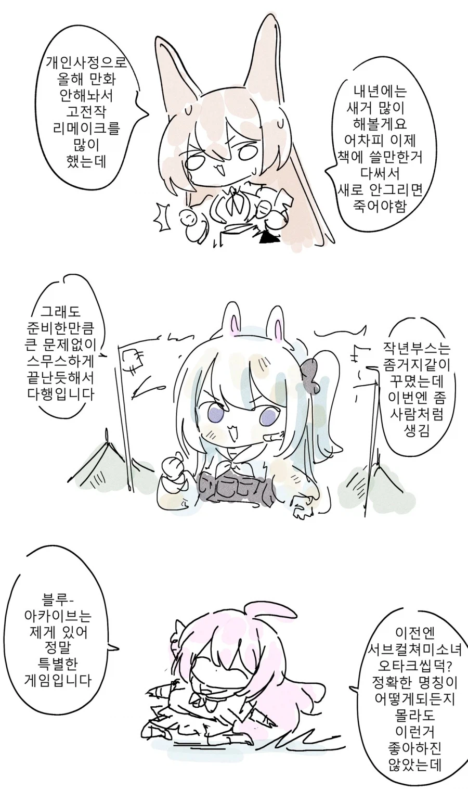
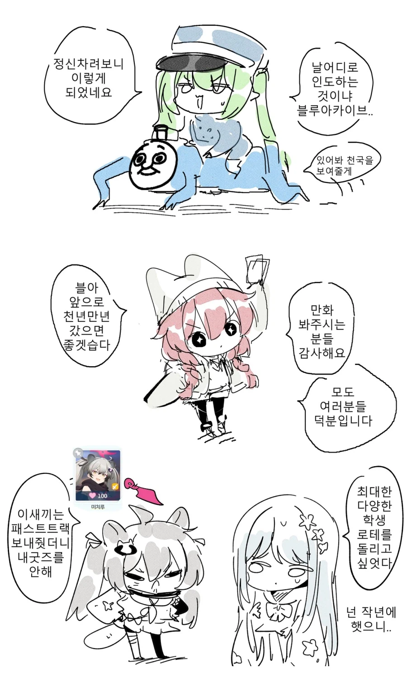
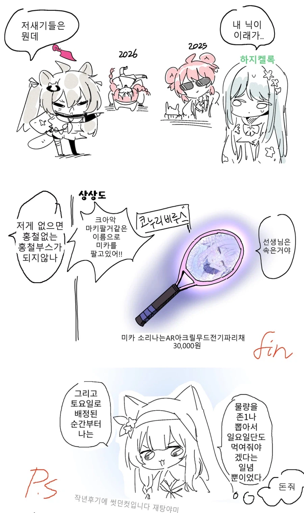
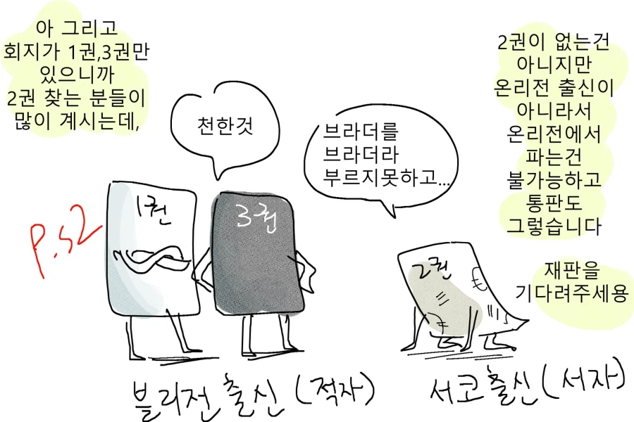

https://x.com/KMNST1206/status/2119784712638247381?a=-6ChsHsgEJLQ2Lr7u5Q&s=09
설명:이 작가는 블아 팬만화로 인기얻어서 일자리(이터널 리턴 공식 만화)까지 얻었다.
그래서 감회가 더 새로울듯





https://x.com/KMNST1206/status/2119784712638247381?a=-6ChsHsgEJLQ2Lr7u5Q&s=09
설명:이 작가는 블아 팬만화로 인기얻어서 일자리(이터널 리턴 공식 만화)까지 얻었다.
그래서 감회가 더 새로울듯
아 고양이 마리 그리던 작가?
이리인데 왜 블붕이죠

나도 블아가 천년만년 갔음 좋겠어서 매일 햄부기를 사먹는다
만화 구매해서 봤는데 재밌었지 ㅋㅋ
2차창작 계속 부탁한다
아 이리작가로 됬구나
블블붕이구나

블아만화만 봤는데 이리 공식 되셨군요
이 작가만화 진짜 골때림
ㄹㅇ 유머코드 체급 높더라;
요즘 이리에서 자주보여서 좋음
2차창작의 악마
어떻게 블아에서 인기를 얻었는데 터널턴 작가가 되는거냐아앗
이 작가 밈이랑 개그코드활용방식 체급이 높아서 재밋음
이 작가 회지 ㄹㅇ 개꿀잼 ㅋㅋㅋㅋ
게헨나단물보고 재밌어서 회지 샀는데 꿀잼이였음 ㅋㅋ
가서 레바, 이작가, 1일1감사인가 그거 세개만 샀다
일본에도 블아로 작가된 분 있던데
고양이 모에화?로